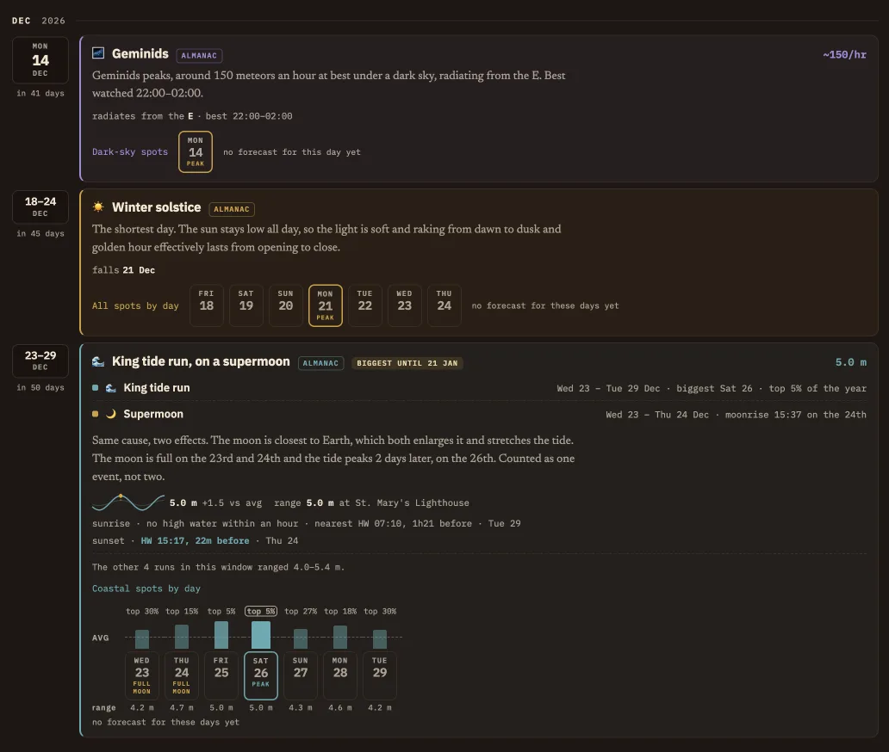
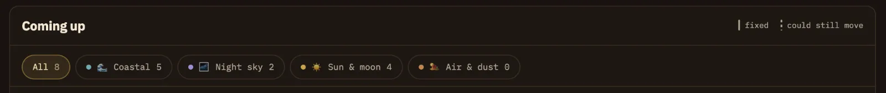
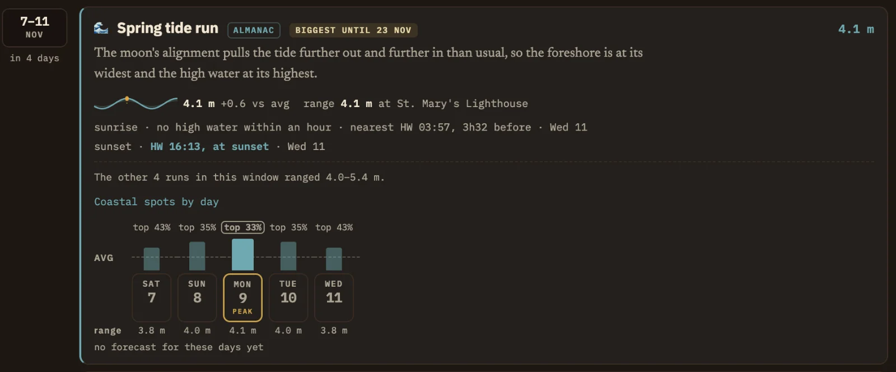

Coming up.
Coming up looks further ahead than the weather forecast can. It lists dates in the next 90 days that are known in advance, such as big tides, supermoons, meteor showers and eclipses, so you can plan ahead for dates worth photographing.
What's in the list
Entries are grouped by month, earliest first. Each one shows the date, how many days away it is, a title with its topic symbol, and a short description of why it's worth knowing about.
Weather-driven topics such as valley mist and cloud inversions can't be known this far out, so they don't appear here. Once they're in the forecast you'll find them on At a Glance.

Every topic
These are all the hot topics (notable photographic conditions and events) PhotoCast looks out for. The first group has dates known in advance, so they appear in the Coming up list. The second group depends on the weather. You'll see those on At a Glance and the Map once they're in the forecast.
Events with dates known in advance: in the Coming up list
- 🌊 Spring tide
- Bigger tides for two or three days around each new and full moon, with higher high water and lower low water.
- 🌊 King tide
- The very biggest spring tides of the year, when the moon is also at its closest.
- 🌙 Supermoon
- A full moon near its closest point to Earth, so it looks a little bigger and brighter as it rises.
- ☀️ Equinox and solstice
- At the equinoxes the sun rises due east and sets due west, lining up with east- and west-facing views. At the winter solstice the sun stays low in the sky all day, which can produce long shadows and warm, directional light when conditions allow.
- ◐ Eclipse
- A solar eclipse visible from the region, with the times and how much of the sun is covered.
- 🌘 Lunar eclipse
- The moon passing through Earth's shadow, often turning a deep red.
- ☄️ Meteors
- The peak of a meteor shower, with dates from the International Meteor Organization's calendar. The date is fixed, but you need a clear, dark sky to see it.
- ✦ Noctilucent clouds (NLC)
- Thin, very high clouds that are lit by the sun from below the horizon on summer nights, often glowing electric blue low in the northern sky. The season is listed. Individual displays can't be forecast.
Weather-driven: on At a Glance and the Map
- 🌊 Storm surge
- Water levels rising above the predicted astronomical tide, pushed up by wind and low pressure. A surge is about water level, not wave size, though it can make high water more dramatic.
- ☁️ Inversion
- Cloud filling the valleys below the hilltops, so you can look down on a sea of cloud.
- 🌫️ Mist
- Valley mist at dawn, usually after a still, clear night.
- 🌁 Sea mist
- Mist or fog rolling in off the sea along the coast.
- 🏜️ Dust
- Saharan dust high in the air, which can deepen the colour of a sunrise or sunset.
- 🏔️ Snow on the tops
- Snow lying on the higher fells and hills, with the valleys clear.
- ❄️ Fresh snow
- Fresh overnight snow can simplify the landscape and cover existing tracks.
- ❄️ Snow and mist
- Snow on the ground with mist or low cloud, for soft, bright, low-contrast winter scenes.
- 🌤️ Clearance
- Skies clearing after rain or cloud, often with very clean air and long views.
- 🌸 Bluebells
- Bluebell woods in flower in spring. Filtering the map to bluebell woods needs Pro.
- 🌌 Aurora
- The northern lights are possible tonight. See Aurora and night sky.
New arrivals
As each day passes, new dates come into the 90-day window. When something notable arrives, the tab shows a small number and a line appears at the top of the list naming the most notable arrival, for example "2 announced — the Geminids entered the window". Something exceptional is marked ◆ Rare.
Press Mark as seen to clear the number. Most of the time there's nothing new, and the tab stays quiet.
Filters
The chips above the list narrow it to one family of topics: All, 🌊 Coastal, 🌌 Night sky, ☀️ Sun & moon or 🏜️ Air & dust. Each shows how many entries it holds. Only one is on at a time.

The key at the top, fixed and could still move, explains the two outline styles. More on what they mean.
Reading an entry
Each entry has the date, or the period of several days, on the left with how many days away it is. Beside that is the title with its topic symbol, the key figure on the right (such as "~150/hr" for a meteor shower, which is the shower's catalogue peak rate under ideal dark skies with the radiant overhead, so actual counts are usually far lower; or "5.0 m" for a tide, which is its range in metres) and a short description of why it's worth knowing about. For showers whose radiant stays low from the UK, such as the Eta Aquariids, the figure is the rate you can realistically expect here instead.
The tags beside the title tell you what kind of entry it is:
- Almanac
- An astronomical almanac entry: a date calculated in advance, such as a tide, a moon phase or an eclipse.
- Forecast · peak
- The expected peak of something that depends partly on conditions. It could still move.
- Biggest until …
- How long you'd wait for a bigger one. "Biggest until 21 Jan" means nothing larger arrives before then.
- In next 4 days
- It overlaps the days on At a Glance, so the forecast already covers it.
Two events at once
When two events share a cause and land together, such as a king tide period on a supermoon, they're shown as one entry with a line for each. The description explains how they're linked.
Tide at the lightPro
Tide entries show how a period of big tides lines up with sunrise and sunset, day by day. PhotoCast checks whether high water falls within an hour of sunrise or sunset, and that is what "Tide at the light" means. Here's the spring tide period of 7 to 11 November, piece by piece.

123456789- 1What kind of entry. ALMANAC means the dates are fixed. BIGGEST UNTIL 23 NOV tells you how long you'd wait for a bigger one.
- 2Peak tidal range. The tidal range on the biggest day of the period, in metres: the difference between high and low water at the named tide station.
- 3The tide at a glance. A small curve with sunrise and sunset marked as dots, then the range and how it compares with an average tide (+0.6 vs avg).
- 4Where it's measured. The range is measured at the named tide station, here St Mary's Lighthouse.
- 5Sunrise and sunset. A line for each of sunrise and sunset, saying whether high water falls within an hour of it. If not, you get the nearest high water and how far off it is. A match is highlighted, as with HW 16:13, at sunset.
- 6Other periods. How this period compares with the others in the 90 days.
- 7Each day ranked. A bar for each day of the period against the dashed average line, with its rank for the year (top 33%). The biggest day is outlined.
- 8Day buttons. Tap a day to see the coastal locations for it. The peak day is marked PEAK.
- 9Range and forecast. The range on each day. Until a day is inside the forecast, the entry says no forecast for these days yet and there are no locations to show.
To use it, find the day where sunrise or sunset lines up with high water, then check that day on At a Glance once it's inside the forecast. For a full breakdown of a single day's curve, see the Tide panel on the Map.
ProThe tide at the light is available with Pro. On Lite the tide date and range are still listed.
Going further
Under each entry is a row of day buttons, labelled for what they'll show: Coastal spots by day, Dark-sky spots or All spots by day. The peak day is marked, and full moons are flagged.
- Once a day is inside the forecast, its button opens the Map on that day with the matching locations shown.
- Until then the row says "no forecast for this day yet". Come back nearer the time.
Tips
- Check Coming up once a week and note the dates that fall on a day off.
- A spring tide that lands on a sunrise is worth planning around. The tide panel on the Map shows exactly where the water will be.
- Meteor shower peaks are fixed, but whether you'll see anything depends on the cloud. Look again when the date reaches At a Glance.